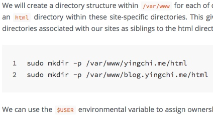
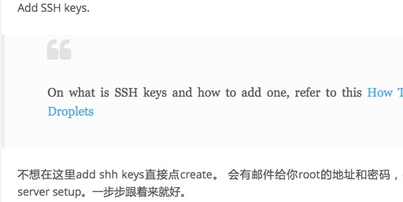
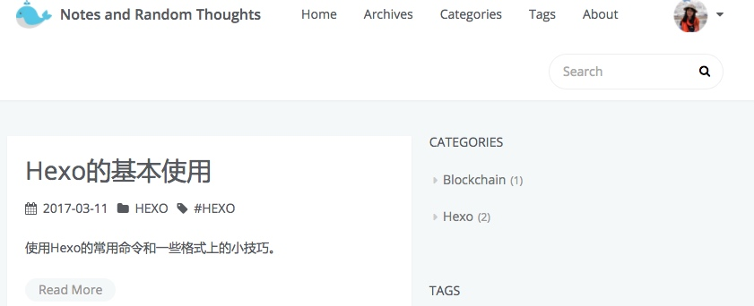

关于Hexo Icarus主题配置的详细介绍，和相关的一些小技巧。
前言
此篇不介绍HEXO的搭建，只讲ICARUS的个性化配置，HEXO的配置在国内也有很多的教程。
教程参考了这里：作者MoRan_Sky, 这里：作者Lemon和这里：作者Fengyu。
发布者已经把基本的配置步骤写在了wiki里，还包括FQA，如果有什么解决不了的问题也可以到Icarus GitHub Wiki去提问，或看有没有和你同样问题的回答。
ICARUS主题
什么是ICARUS
- 一种很清爽的HEXO主题
- 安装了评论，分享框架，非常之方便
ICARUS安装
ICARUS主题包可以在这里找到，但更多人是采用GIT来下载的，切换到HEXO根目录,然后打入：
|
|
下载之后将根目录里的
|
|
改成：
|
|
接下来可以输入hexo s来在本机生成，然后在 https://localhost:4000 打开博客主页。
主题设置
自带可更改项目
LOGO配置
在博客页面的左上角，有一个LOGO，因为我们没有更改，所有这是作者的LOGO。
先确定你的LOGO图片的后缀是.png，然后把你的LOGO图片重命名为logo.png，然后在你主题文件中的css/images/文件夹，将这张图片粘贴来替换之前的图片。
用户信息配置
在主页的左边，这里显示的是博客作者的信息。
打开主题的_config文件，找到profile一栏，你可以自定义你的profile信息。
|
|
如果想把FOLLOW按钮稍作修改，变成联系我，并且把链接变成发送邮件到自己的邮箱的话：
|
|
标签，分类和关于
在最上方的菜单栏，我们点击”标签”，”分类”，”关于”都会显示无法找到文件，ICARUS主题很好，它为我们预设了这三个分类。
在主题的_source文件里，把里头的三个文件全部复制，然后粘贴到HEXO跟目录的source文件夹，再刷新一下网页，就可以看见啦。
代码高亮
ICARUS主题预设了许多代码高亮的主题，具体的名称可以在主题目录的source/css/_highlight文件夹里找到。
把主题的_config文件里的highlight类型换成你喜欢的类型。
关于选择代码高亮语言的问题，请看这里。
搜索
ICARUS主题提供了3种搜索方式，个人喜欢insight，当然你也可以选择baidu或者swiftype。
使用insight的话先把博客根目录下面的_config.yml里面的
|
|
改成
|
|
接下来需要安装一个小插件：
|
|
接下来可以刷新一下网页，点击右上角的搜索框，就会发现已经成功配置了。
删除搜索按钮
如果使用的是insight搜索，所以那个搜索按钮没有什么意义，可以找到主题文件中的layout/search/index.ejs，将里面的:
|
|
改成：
|
|
之后你就会发现那个搜索按钮没了。
多说评论
评论是个很重要的东西，这可以让你和读者进行沟通。
如果需要开启评论功能，需要先去相应的地方注册账号，然后按照提示把ID或名字添加上。点击这里 跟着做就对了。剩下一些评论框自定义的样式就自行百度，或注册后在网站内进行更改设置就好了。
多说：在多说官网先创建一个账号，然后再这里创建一个站点，站点地址写博客的地址，在多说域名那里按照要求填入，填入的名称（也就是去掉.duoshuo.com）就是多说的shortname。
ICARUS已经为你写好了评论的框架，你不需要自己搭建，你只需要把主题的_config文件中的comment改成这样：
|
|
之后刷新页面，拉到下面，就会看到评论的界面啦。你可以前往你自己的多说域名然后自定义评论。
对于想使用Disqus的用户，去Disqus官网新建个账户。Create a new forum， 然后按照官方指南把自己的forum integrate到博客来。现在对于Hexo平台还没有integrate好的选项，没关系，等到你选择自己的forum名字的时候记住那个shortname，到icarus主题里的_config文件里填上就好了。主题会帮你做好所有的integrate。
分享
在本地使用bdshare，jiathis都是可以的，但在Github上神奇的消失了。我也试过bshare，dsshare，但还是神奇的消失了，读者可以自己的试一下。如果你也用Github Page，建议把主题的_config文件中的share改成:
|
|
友情链接
ICARUS自带友情链接功能，在主题的_config中的miscellaneous里：
|
|
比如：
|
|
个性化修改
删除搜索按钮
如果使用的是insight搜索，所以那个搜索按钮没有什么意义，可以找到主题文件中的layout/search/index.ejs，将里面的:
|
|
改成：
|
|
之后你就会发现那个搜索按钮没了。
把文章界面放宽
在ICARUS主题里，如果你把屏幕放的宽一点，真正的文章就只有中间一小条，我们需要稍微把文章DIV放宽一点。
把主题的source/css/_variables.styl文件打开，翻到43行左右，把：
|
|
改成
|
|
设置友情链接为打开新页面
之前的友情链接会在自身的博客覆盖，如果想要在新窗口打开（比较推荐这样）。
把主题文件的layout/widget/links.ejs打开，把：
|
|
改成
|
|
社会链接
在关注我按钮的下面的下面，有一排图标，这就是社会链接，也就是你在别的地方的首页。它是fa fa-icon，ICARUS自带FontAwesome，所有你再安装的时候只要写入class名就可以。详细的图标内容可以在这里找到。
格式：fa-后面的内容，图标: 链接
打开主题的_config文件：
|
|
在这里，我们只需要输入fa-后面的内容当图标就行了。
自定义社会链接title
在社会链接的图标上停留的时候，会弹出图标名的title，但有时候我们想自定义title，怎么办呢？
打开主题文件中的layout/common/profile.ejs文件，把：
|
|
改成：
|
|
那么我们在config里的social_links的表达内容就是：
|
|
横幅和略缩图
在HEXO的根目录source/_posts文件夹，里面有你的文章，ICARUS允许你为文字设置横幅与略缩图，切记都要在两个—之间输入。
略缩图的设置方式：thumbnail：图片
横幅的设置方式：banner：图片
修改代码的的边距
修改之前的代码块长这样：

这个代码块的边距个人觉得有点大了。尤其对于只有一两行的代码，很占空间。
从哪里能改呢？先从主体的CSS文件看起：~/hexo_blog/themes/icarus/source/css/style.styl
里面与code有关的有两个地方，改了在第30行附近的设置，发现并没有什么变化。再往下看，发现这个另外一个文件被调用了 @import "_highlight/index"，于是我们去~/hexo_blog/themes/icarus/source/css/——highlight/index.styl看看：
|
|
我把padding相关的参数改成10px
给图片加阴影
有时候添加的图片可能会与文章背景混淆，使得读者看不清到底哪部分是图片哪部分是文章。使用img-shadow为图片添加边角阴影可以更加凸显图片的位置，也能更美观。
在article.styl里面加入以下：
|
|
关于CSS3 shadow属性的参数具体可以参考W3School的Tutorial
使用HTML语法插入图片:
|
|
修改引用的渲染格式
改动之前的是这样的：

个人不是很喜欢这种模式。不简洁，也占空间。
同样从从主体的CSS文件看起：~/hexo_blog/themes/icarus/source/css/style.styl，发现调用了@import "_partial/article"。打开它发现对blockquote的设置如下：
|
|
我把它改为下面这样
|
|
testing blockquote
在Post页面关闭侧边栏
点进去文章的时候觉得侧边栏(分类，标签…)让人觉得有点多余，不能专心看文。就想找方法把它设置为只在首页显示而不在文章页面显示。
打开~/hexo_blog/themes/icarus/layout/layout.ejs会找到下面一行代码
|
|
theme.custom.sidebar 指的是主题_config.yml里面的参数。我们可以对应的找到custom下面的sidebar。发现它只有left, right两个设置。
没关系，那我们就自己加个参数在_config.yml里面吧：
|
|
现在在回到layout.ejs把之前的三行改成下面这样的：
|
|
is_post(),is_home()是hexo自带的函数
Wait, 以为现在就万事大吉了么，事情并没有这么简单。。你会发现文章的宽度并不会自动调整。打开JavaScript Console会发现文章所在元素是<section id="main">，我们现在就去主题的文件里找对它的设置。
找到文件~/hexo_blog/themes/icarus/source/css/style.styl
|
|
改成下面这样：
|
|
@media xxx,side_baretc 都是在别处(_variables.styl)定义好的变量
接下来打开 ~/hexo_blog/themes/icarus/source/css/_variables.styl
在//Sidebar这个部分加入我们在上面用到的变量：
|
|
更多
如果还想自定义CSS的话，主题样式文件都在themes/icarus/source/css/_partial里，对照着页面文件找到对应的class样式去修改吧。
比如我这里发现在页面宽度是。。。的时候，两栏的效果并不是很理想。

时候可以在测试页面按cmd+opt+j调出Javascript console查看元素。会发现它是从根目录下public/css/style.css而来，但是我们直接改这里的话是没有用的。因为所有public文件夹下都是由hexo g生成的。
所以这里要更改我们所用主题的css生成文件。例如我的在这个路径下~/hexo_blog/themes/icarus/source/css
桑心的是，我试图修改了_variables.styl里面的sidebar-column之类，然后运行
|
|
发现并没有什么*用。。。 新手小白在这里欢迎指教啊~